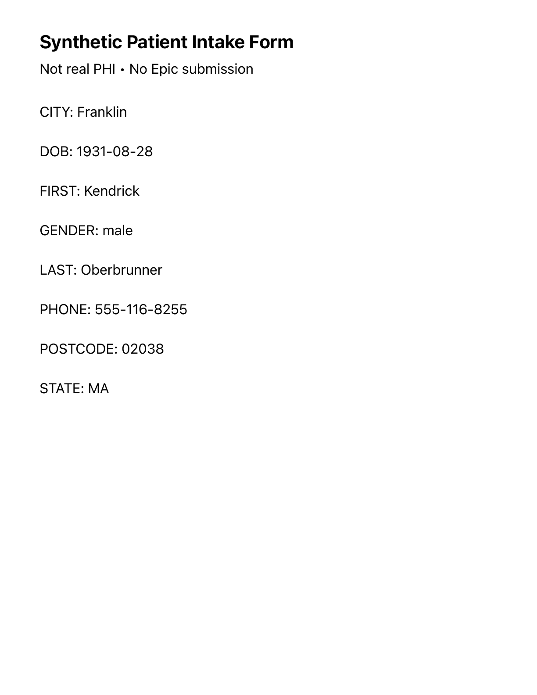

Rendered synthetic form

Green: exact field match; orange: missing answer; red: wrong answer. Rectangle coordinates from Apple Vision, normalized to the raster page.
Source-grounded field comparisons
Model receipt
This is one source-verified synthetic form. No claim of training improvement, generalization, or statistically supported advantage. Fireworks/NVIDIA/Mistral are teammate lanes and are NOT_TESTED unless their exact inference receipts are imported.